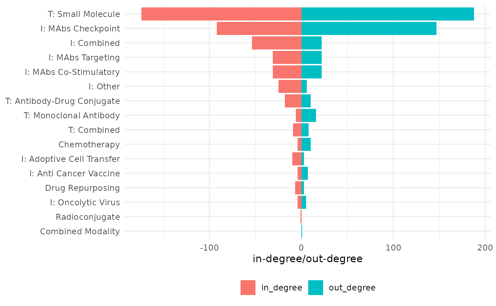
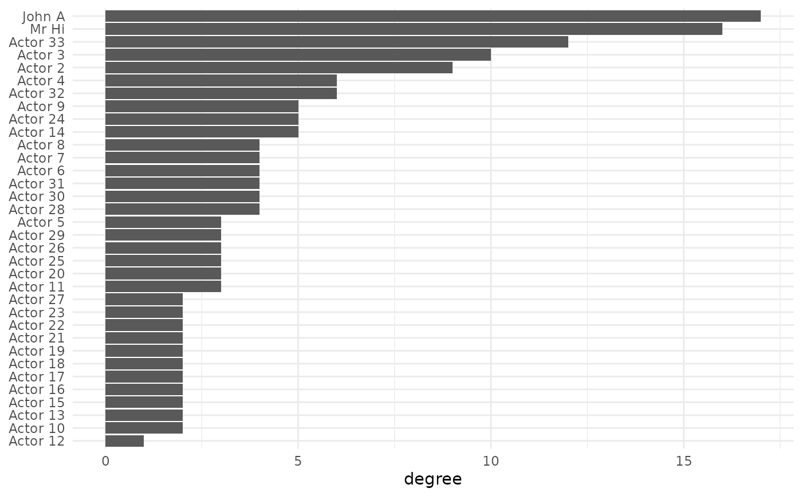

Visualize Node Degree Distribution in a Network Graph
Source:R/plot_node_degrees.R
plot_node_degrees.RdGenerates a horizontal bar‐style plot of node degrees for an igraph network.
For undirected graphs, it shows each node’s total degree.
For directed graphs, it displays in‐degrees (as negative bars) alongside out‐degrees.
Value
A ggplot object:
Undirected graphs: A bar for each node showing its total degree.
Directed graphs: Split bars per node with negative values for in‐degree (pointing left) and positive values for out‐degree (pointing right).
Details
This function computes:
- Total degree
Number of edges incident on each node (for undirected graphs).
- In‐degree
Number of incoming edges per node (for directed graphs).
- Out‐degree
Number of outgoing edges per node (for directed graphs).
For directed graphs, in‐degrees are negated so that bars extend leftward, providing an immediate visual comparison to out‐degrees.
Internally, it uses:
igraph::degree()to compute degrees,dplyrandtidyrfor reshaping the data,ggplot2for plotting.
Customization
You can modify the returned ggplot with additional layers, themes, or labels.
For example, to add a title or change colors:
plot_node_degrees(g) +
ggtitle("Degree Distribution") +
scale_fill_manual(values = c("in_degree" = "steelblue", "out_degree" = "salmon"))Examples
library(ig.degree.betweenness)
library(igraphdata)
data("karate")
data("oncology_network")
plot_node_degrees(oncology_network)

plot_node_degrees(karate)
#> This graph was created by an old(er) igraph version.
#> ℹ Call `igraph::upgrade_graph()` on it to use with the current igraph version.
#> For now we convert it on the fly...
